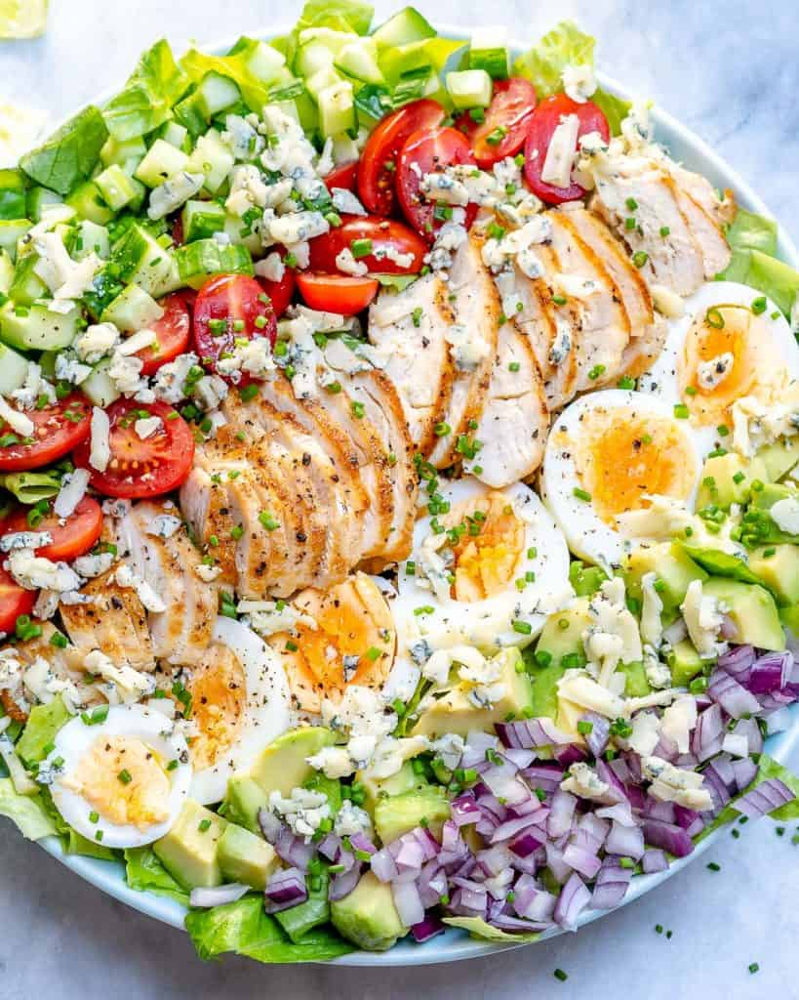

Chicken Cobb Salad

- Chicken Tenders: or you may use chicken breasts or boneless and skinless chicken thighs.
- Olive Oil: or avocado oil will also work.
- Hard-Boiled Eggs: If you do not like eggs, skip. But it is recommended.
- Veggies: Cherry tomatoes, avocado, onion, cucumber, and lettuce.
- Blue Cheese: You can use crumbled feta cheese if you do not like blue cheese.
- For the Homemade Ranch Dressing: Yogurt, chives, garlic, olive oil, salt, and pepper.
Steak Salad

- Apple Cider Vinegar: or balsamic vinegar.
- Olive Oil: or avocado oil, but olive oils are best for salads.
- Dijon Mustard: Honey mustard works too.
- Garlic Powder: or 1 garlic clove minced.
Vegan Green Goddess Pasta Salad

- Pasta: use any pasta of your choice.
- Green Cabbage: do use green cabbage and not red/purple.
- Head of broccoli: use fresh and not wilted broccoli with yellow spots.
- Artichoke: in jars or cans.
- Homemade pesto sauce: you will need fresh basil, tahini, apple cider vinegar, garlic clove, and one
lemon.
Spicy Shrimp Avocado Salad
- Olive oil: Olive oil is used to cook the shrimp until perfectly done. You can use any type of
vegetable oil, but we like to use olive oil.
- Shrimp:You will need one pound of raw, peeled, and deveined shrimp. Be sure to leave the tails on.
- Cayenne pepper: Just a little bit of cayenne pepper is used to season the shrimp until perfectly
spicy. You can omit this ingredient if you would like. A great substitution would be garlic powder.
- Baby spinach:Leafy baby spinach leaves are the base for this salad. If you do not have spinach, then
you can use romaine or spring mix lettuce.
- Cherry tomatoes: Halved cherry tomatoes add additional texture and flavor to the salad.
- Red onion:Tangy, crunchy red onion amps all the fresh flavors and rounds everything out. We highly
recommend using red onion in this shrimp avocado salad.
- Boiled eggs:Four boiled eggs are sliced and tossed throughout the salad to give it additional
protein.
- Corn:You can use grilled or thawed corn. Both options work!
- Avocado: One large avocado is sliced and layered throughout the salad.
- Blue cheese: Blue cheese smoothes everything out and adds additional flavor.